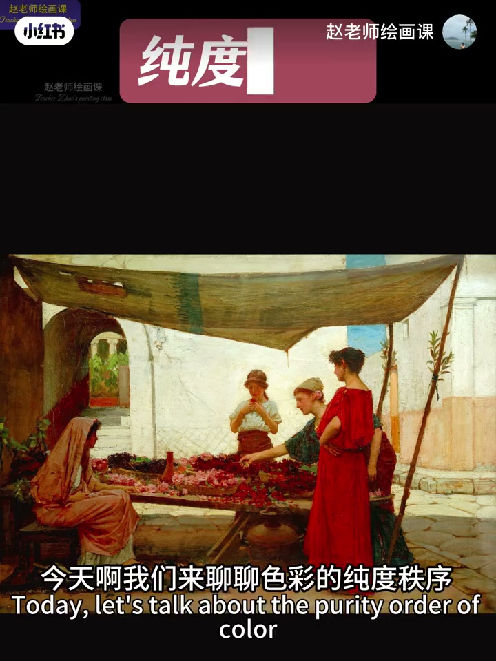
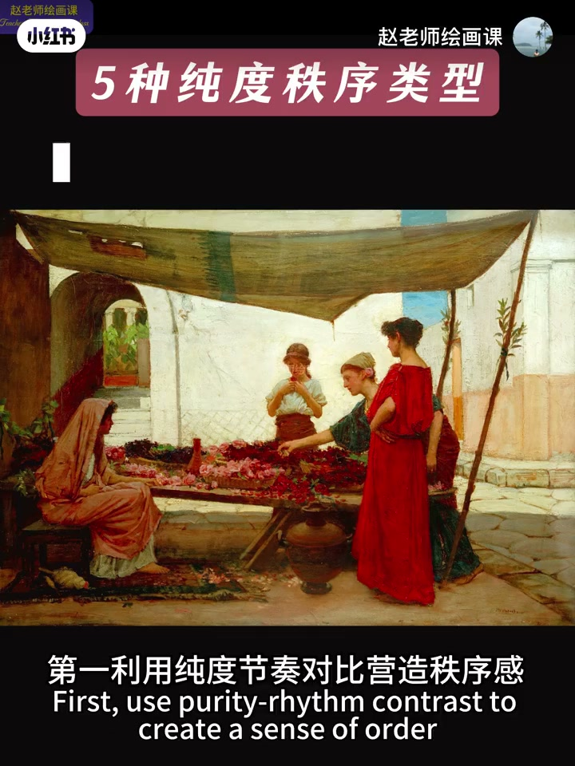
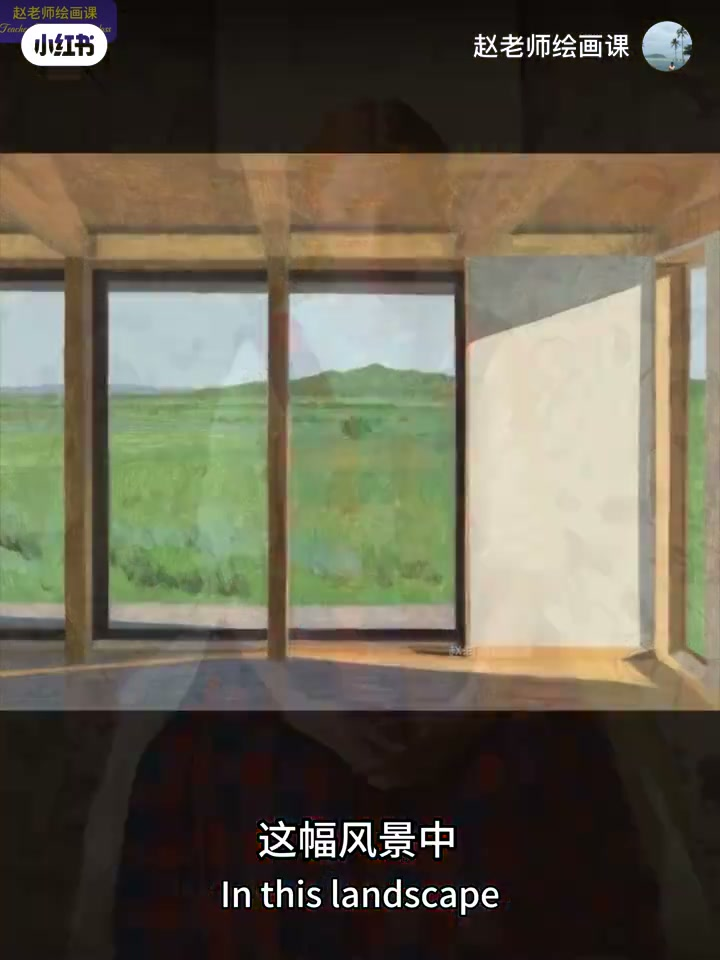
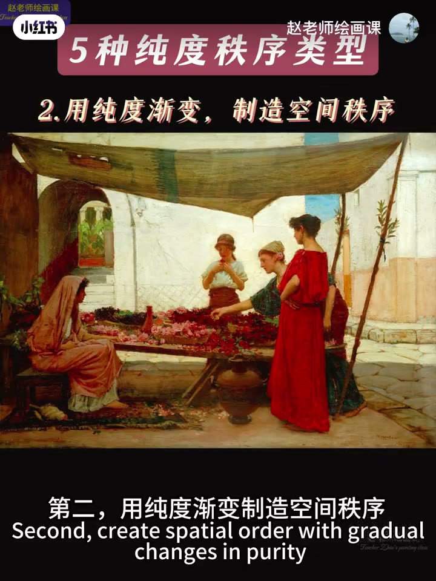
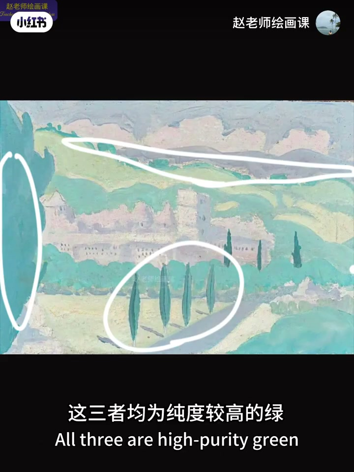

内容要点
接上期明度秩序，本期讲纯度秩序。秩序＝合理安排：阅兵整齐划一、劳逸有张有弛、合影高低间隔都是秩序感。落到画面有三类常见做法——纯灰节奏对比、纯度渐变造空间（远灰近纯）、高纯度分布服务构图（纵线、三角、H形）。视觉引导与强化主题留待下期。
知识结构
事例类比；秩序即合理安排。
背景灰vs人物纯；栏杆隔绿如强弱音符。
远灰近纯；伦勃朗红饱和递减。
朱红纵线／高纯绿三角与H形支撑结构。
纯度不是越高越好：先定纯灰节奏，再用递减纯度推空间，最后让高纯色块站到构图骨架上。
00:00-01:33秩序＝合理安排
从区分红黄蓝，到关注明度与纯灰微妙变化，才算打开色彩大门。接明度秩序，本期聊纯度秩序：画家设计师善用纯度差，建筑服装室内电影皆可用，绘画最直接。
「秩序」听着抽象，用事例理解：阅兵整齐划一带来视觉与心理震撼；专注工作与餐桌上放松有张有弛也是秩序；合影矮前高后、男女间隔同样有序。总结：秩序即合理安排。00:19／01:25 落点清晰。

01:33-02:16纯度节奏对比
第一种：用纯度节奏对比营造秩序。人像里背景灰与人物「纯」是大节奏，衣服上纯灰变化也有节奏，自上而下亦能感到纯灰起伏。
风景里室内与天空大灰块，对窗外绿地之纯；局部低纯度栏杆、墙面把高纯绿隔成大小不一形状，如强弱音符。01:36／01:56 标注「灰／纯」可核验。


02:16-02:42纯度渐变：远灰近纯
第二种：用纯度渐变制造空间秩序。海边景色从远山到近屋与红色灌木，体现远灰近纯；海面处理同理。
伦勃朗作品中从桌角到远处墙面，红色饱和度逐渐降低，空间感随之合理。02:20 远山标灰、近屋顶高纯是直接证据。

02:42-03:30纯度分布服务构图
第三种：纯度分布服务构图秩序。两根纵向朱红高纯线稳稳支撑画面；绿色系风景中近处矮树、左边大树与远处丛林均为较高纯度绿，共同成三角形；另一幅高纯绿形成H形支撑结构。
另两类——纯度视觉引导与强化主题——下期再讲，并指向色彩系统课。03:03 三角叠加可指认。

完整转录（94段）
以下文本由 Whisper medium 模型自动转录，可能存在少量识别误差，已尽可能修正。
当我们从区分红黄蓝不同色相
到关注色彩明度
纯灰间的丰富微妙变化时
恭喜你
你已经打开了色彩世界的真正大门
接上一期明度秩序
今天我们来聊聊色彩的纯度秩序
纯度这个词大家都不陌生
画家设计师
特别善于利用色彩不同的纯度差异
创造出精彩的视觉效果
比如建筑
服装
室内
电影
当然在绘画中应用最为直接
在纯度后面再加一个词
秩序好像马上变得抽象起来
没关系我们还是通过视力来理解
在阅兵仪式中
人民解放军走方正时
为什么会让人心潮澎湃
这要归功于极致的整齐画一
和精准动作步伐
所带来的强烈视觉和心理的双重震撼
这就是一种秩序感
一个人专注望我的工作
和休息时家人朋友餐桌上的自由放松
如此有章有齿
劳逸结合间也传逆出一种秩序感
集体合影时
个矮的站前排
高的站后排
男女最好间隔开
是不是显得也很有秩序
总结一下
秩序即合理的安排
那怎么才能合理安排画面纯度呢
有以下几种常见的类型
我们用画作来理解
第一
利用纯度节奏对比营造秩序感
在这幅人像中
背景的灰和人物的唇
是一种大的节奏
衣服上的红色唇灰变化
也很有节奏感
而画面从最上方往下
也能感受到明显的唇灰节奏变化
这幅风景中
室内和天空大的灰色块
和窗外绿地的唇
形成整体的唇灰对比节奏
而举步
低纯度的栏杆
墙面
把纯度高的绿草地
间隔成了大小不一的形状
如同强弱音符一样
营造出一种节奏感
第二
用纯度渐变制造空间秩序
在这幅海边景色中
从远山到近处房屋
红色灌木
体现了远辉近纯的空间秩序
海面的处理如出一辙
在伦布朗的这幅作品中
从桌角到远处的墙面
红色的饱和度逐渐降低
营造出了一种合理的空间感
第三
用纯度分布
服务画面的构图秩序
在这幅作品中
从纯度最高的两根纵向
珠红色线条稳稳的支撑了画面
服务了构图关系
而在这幅绿色系的风景中
近处的矮树和左边的大树
还有远处的丛林
这三者均为纯度较高的绿
共同形成了一个三角形
成为构图的一部分
在这幅画中
高纯度的绿形成了一个H形
支撑了画面结构
还有两种色彩纯度秩序类型
即纯度的视觉引导和强化主题表达
我们下期再讲
如何应用这些原理
请关注我的色彩系统课程
下期见
拜拜